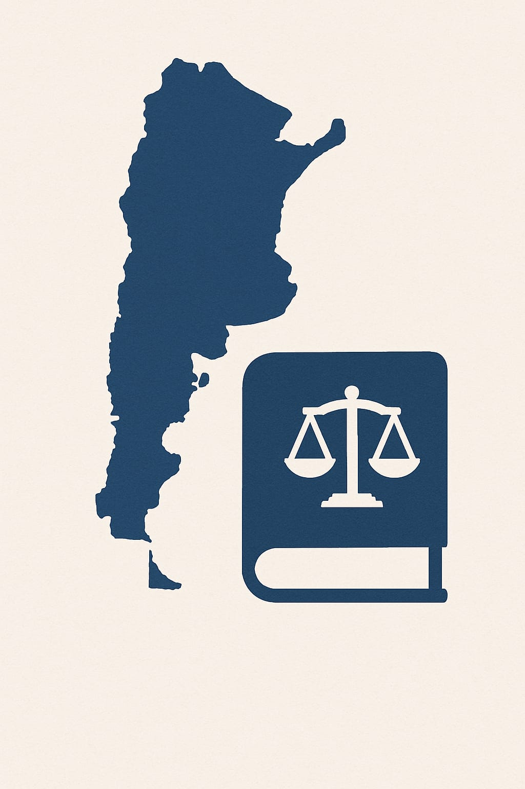

Derechos Laborales
Derechos Laborales
- Derecho a un trabajo digno y accesible para todos.
- Prohibición de discriminación en el empleo.
- Adaptaciones razonables en el lugar de trabajo.
- Fomento de la capacitación y el desarrollo profesional.
 Marco Legal en Argentina
- Ley 26.378: Ratificación de la Convención sobre los Derechos de las Personas con Discapacidad.
- Ley 22.431: Establecimiento de un cupo laboral del 4% en el sector público.
- Ley 27.044: Promoción de programas de capacitación y empleo inclusivo.
📍 Mapa Interactivo
Ubicaciones clave en Posadas relacionadas con la inclusión laboral:
📅 Eventos Inclusivos
- Feria Inclusiva del Parque de la Ciudad: Primer fin de semana de cada mes. Más de 20 emprendedores locales participan.
- Expo Inclusión Misiones 2025: Fechas: 23–26 abril y 21–24 agosto. Modalidad mixta.
- Incluirtech: Programa de capacitación digital reciente con cuatro módulos.
🏛 Programas en Curso
- Entrenamiento laboral en Alquimia: 4 meses con tutor, enfoque inclusivo y accesibilidad.
- Convenios con LOGICOM: Entrenamientos con inclusión en áreas de depósito y atención al público.
- Programas ANDIS y FONADIS: Apoyos técnicos y formación para empleadores y emprendedores con discapacidad.
- Apoyo provincial: ARAUCO e Iguazú Duty Free como ejemplos de inclusión empresarial efectiva.
Recursos para la Búsqueda de Empleo
Testimonio en Primera Persona
Una historia real de inclusión laboral en Posadas:
Hoy te presentamos a Evaristo Duarte, un joven misionero que, con esfuerzo, perseverancia y dignidad, logró abrirse camino en un sistema que muchas veces le dio la espalda. Evaristo convive con una discapacidad motriz en sus piernas —producto de una parálisis espástica congénita—, una condición que no define quién es, pero sí le impuso barreras que debió enfrentar desde muy joven.
Desde la falta de accesibilidad en escuelas y espacios públicos, hasta los prejuicios a la hora de buscar empleo, su historia refleja los desafíos que atraviesan miles de personas con discapacidad en Argentina. Sin embargo, también es testimonio de resistencia y transformación.
Luego de años de lucha, capacitaciones y postergaciones, Evaristo logró ingresar a trabajar en el Estado provincial, en el marco del cupo laboral del 4% establecido por ley para personas con discapacidad. Su ingreso no fue un regalo, sino el reconocimiento a una capacidad que siempre estuvo, pero que el entorno muchas veces se negó a ver.
Esta entrevista busca visibilizar su recorrido. Hay historias como la de Evaristo que nos invitan a mirar con empatía, a escuchar con atención y comprometernos con una sociedad más justa e inclusiva.
¿Cómo Puedes Ayudar?
- Si eres empleador, considera la inclusión de personas con discapacidad en tu equipo.
- Si eres familiar, promueve la autonomía y el acceso a capacitación.
- Como ciudadano, combate el prejuicio y difunde los derechos de las personas con discapacidad.